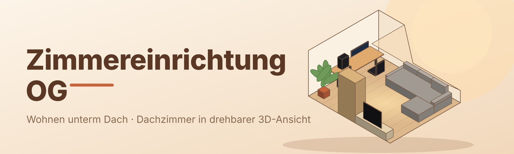

Einkaufsliste
Was noch ins Zimmer kommt – mit Maßen und Link zum jeweiligen Shop.
IKEA – 6 Artikel
PAX KleiderschrankIKEA
99,8 × 60,4 × 201,2 cm · neben dem Mauervorsprung an der Türwand
BESTÅ TV-Bank mit Türen (Sideboard)IKEA
180 × 42 × 38 cm · neben dem Schrank, auf dem Boden
SÖRVALLEN 3er-Bettsofa mit Récamiere linksIKEA
284 × 193 × 88 cm · unter der Schräge, 35 cm Abstand zur Schrägenwand
LACK CouchtischIKEA
90 × 55 × 45 cm · vor dem Sofa, bei ausgeklapptem Sofa vor dem Bett (20 cm Abstand)
STOENSE Teppich Kurzflor, mittelgrauIKEA
200 × 300 cm (quer gelegt: 300 breit × 200 tief), Gesamtdicke 18 mm · vor dem Sofa, von der Armlehne am Westende bis zur Fensterwand, vor der Récamiere-Stirnseite, 42 cm Abstand zum Sideboard · 139,00 €
Alternative: STOENSE Teppich Kurzflor, mittelgrau, 170 × 240 cmIKEA
170 × 240 cm (quer gelegt: 240 breit × 170 tief), Gesamtdicke 18 mm · kleinere Variante, vor dem Sofa · 89,99 €
Amazon – 1 Artikel
Samsung Mini LED 75 ZollM70H
Panel 166,8 × 95,8 × 7,7 cm, mit Standfüßen 100,8 cm hoch · steht auf dem Sideboard (zusammen 138,8 cm hoch)
Kaufland – 1 Artikel (Alternative)
Alternative: ETON Teppich silber Grau, 250 × 300 cm (Teppich)Kaufland
300 cm breit × 250 cm tief, Gesamtstärke ca. 11 mm, 100 % Polypropylen, für Fußbodenheizung geeignet · deckt das ganze Sofa samt Récamiere ab · 130,19 € (17,36 € pro m²)
Die Links führen zu den Seiten der Anbieter, dort stehen aktuelle Preise und Lieferzeiten. Alle Maße stammen von den Produktseiten bzw. Datenblättern.